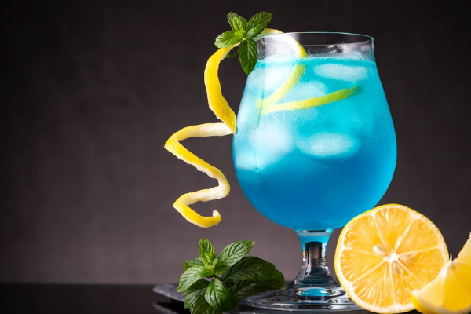

Aromatic Blueberry Pie

A refeshing drink that will keep you hydrated like Poseidon.
Ingredients
- 1 ounce vodka
- 1 ounce blue curacao
- 4 ounces lemonade
- Garnish: lemon wheel
- Garnish: maraschino cherry
Steps
- Add the vodka, blue curacao and lemonade to a shaker with ice
and shake until well-chilled.
- Strain into a hurricane glass over crushed ice.
- Garnish with a lemon wheel and maraschino cherry.